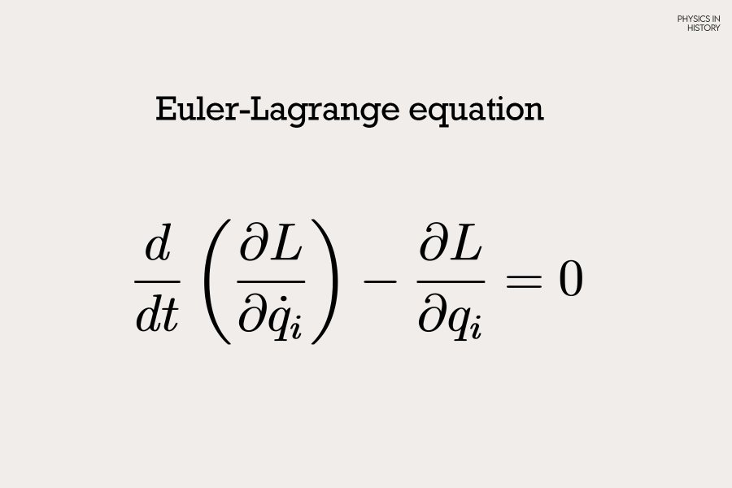

While not meant to be taken literally, this metaphor captures the essence of Chaos Theory: small changes in a system's initial conditions can lead to large and unpredictable outcomes. This idea, often called the butterfly effect, lies at the heart of chaos theory and highlights the sensitive dependence on initial conditions seen in many natural and mathematical systems.
Chaos Theory states that "within the apparent randomness of chaotic, complex systems, there are underlying patterns, interconnectedness, constant feedback loops, repetition, self-similarity, fractals, and self-organization."[1] In simple terms, even though these systems may appear unpredictable, they follow deeper rules. Small changes in initial conditions can lead to drastically different outcomes as time progresses, making long-term prediction extremely difficult.
One common example of a chaotic system is a double pendulum. A double pendulum’s position can be found using deterministic equations. When given a set of initial values, we can predict where it will be at any given time. So why is it an example of a chaotic system? A double pendulum is an example of deterministic chaos. We can consistently calculate its position if exact data is available, but that can be hard to come by. The position of the double pendulum is extremely sensitive, and a change in significant figures can completely change its trajectory. This can be shown in the double pendulum at the top of the article (you can refresh the page to reset the simulation). Ten pendulums are displayed, with the only difference is each theta value increases by 0.001º. Within a few seconds, all the pendulums break off into completely different pathways. A quote that describes this well comes from Edward Lorenz, a mathematician who laid the foundations of chaos theory:
The idea of Chaos Theory stems from the previously mentioned mathematician and meteorologist Edward Lorenz in the 1960s. Throughout his work as a meteorologist, he concluded that weather patterns are nonlinear and can be volatile. This was enforced when one day he decided to go back and recreate a past weather sequence. When he initially made the calculations a year prior, he used six significant figures, but when running through them again he used three. One would expect this decimal change to be insignificant, but that was far from the truth. The two weather sequences were vastly different, showing that seemingly negligible factors can completely change outcomes.[2]
Lorenz is well known for the famous Lorenz Attractor, a model often associated with the Butterfly Effect. This model was developed by Lorenz with the help of Ellen Fetter and Margaret Hamilton.[3] These equations show a simplified model of atmospheric convection. What makes this set of equations notable is its extreme sensitivity to initial conditions. The three differential equations are:
x' = σ(y - x)
y' = x(ρ - z) - y
z' = xy - ßz
The purpose of these equations is to "relate the properties of a two-dimensional fluid layer uniformly warmed from below and cooled from above."[3] x is proportional to the rate of convection, y is proportional to the horizontal temperature variation, and z is proportional to the vertical temperature variation.[3]
The values σ (sigma), ρ (rho), and ß (beta), are constants that can be changed, but picking random numbers will likely result in the particles flying towards infinity. The most common constants, picked by Lorenz himself are:
σ = 10
ρ = 28
ß = 8/3
Starting from an arbitrary point, future points are calculated based on the previous. It is important to note that not all inputs in this equation result in a chaotic output. For example, having initial values (0,0,0) will result in all derivatives equaling 0. The point will forever stay at the origin. On the flip side, inputting large values will result in the particle shooting towards infinity. The most interesting behavior happens when we pick starting points in a certain "sweet spot."
As part of my research, I programmed a 3D model of the Lorenz Attractor, viewable through the button above. I initialized the point at (0.01, 0, 0) to ensure non-zero derivatives and a true chaotic attractor. What’s fascinating about this model is that the trajectory never exactly retraces its steps. If it did, the motion would no longer be chaotic; it would become periodic or predictable. Even more interestingly, if we start 100 points close together, some will diverge to infinity, and some will stay trapped in the attractor’s general shape. Even though they follow similar patterns, no two paths are identical. A tiny difference in starting points leads to drastically different futures.[4]
The orientation of a double pendulum can be shown in the diagram. When doing calculations, we have several variables we will be working with:
L1: Length of the first string
L2: Length of the second string
Θ1: The angle between L1 and a line perpendicular to the ground
Θ2: The angle between L2 and a line perpendicular to the ground
m1: mass of the first ball
m2: mass of the second ball
We can also state that the location of the first ball is (x1,y1) and the location of the second ball is (x2, y2). The point the pendulum is hanging from is (x0,y0). We are also going to assume that x0, y0 = 0 (this part is more important when programming it). Using basic trigonometry, we are able to write these points as the following:
x1 = L1sinΘ1
y1 = -L1cosΘ1
x2 = x1 + L2sinΘ2
y2 = y1 - L2cosΘ2
Now we will need the derivatives of each coordinate. Derivative is denoted with a dot:
ẋ1 = L1θ̇1cosΘ1
ẏ1 = L1θ̇1sinΘ1
ẋ2 = ẋ1 + L2θ̇2cosΘ2
ẏ2 = ẏ1 + L2θ̇2sinΘ2
To calculate the change in the Θ values, we are going to be using a Lagrangian. The Lagrangian describes a system in terms of its kinetic and potential energy and is founded on the principle of least action. The formula for the Lagrangian is written as:
L = T - V
In other words, the Lagrangian equals the kinetic energy (T) minus the potential energy (V) within the system. This means the next step is to solve for T and V:
T = 1⁄2m1(ẋ12+ẏ12) + 1⁄2m2(ẋ22 + ẏ22)
Expand.
T = 1⁄2m1[L12θ̇12(cos2θ1 + sin2θ1)] + 1⁄2m2[(L1θ̇1cosθ1 + L2θ̇2cosθ2)2 + (L1θ̇1sinθ1 + L2θ̇2sinθ2)2]
Simplify. Key Identities: sin2θ + cos2θ = 1 and cosθ1cosθ2 + sinθ1sinθ2 = cos(θ1 - θ2)
T = 1⁄2m1L12θ̇12 + 1⁄2m2(L1θ̇12 + L22θ̇22 + 2L1L2θ̇1θ̇2cos(θ1 - θ2))
V = m1gy1 + m2gy2
This can be rewritten as:
V = -(m1 + m2)gL1cosθ1 - m2gL2cosθ2
Now lets sub this information into the Lagrangian (L = T - V):
L = 1⁄2m1L12θ̇12 + 1⁄2m2(L1θ̇12 + L22θ̇22 + 2L1L2θ̇1θ̇2cos(θ1 - θ2)) + (m1 + m2)gL1cosθ1 + m2gL2cosθ2
We will now apply the Euler–Lagrange equations with respect to Θ₁ and Θ₂. The formula states that the total time derivative of the Lagrangian’s partial derivative with respect to velocity, minus its partial derivative with respect to position, must equal zero. This will allow us to get the angular acceleration for both theta values. This equation will be one of the most important components of the program.
(m1 + m2)L1θ̈1 + m2L2θ̈2cos(θ1 - θ2) + m2L2θ̇22sin(θ1 - θ2) + (m1 + m2)gsinθ1 = 0
m2L2θ̈22 + m2L1θ̈1cos(θ1 - θ2) + m2L1θ̇12sin(θ1 - θ2) + m2gsinθ2 = 0
The last step is to get the explicit equations for θ̈1 and θ̈2 using the Euler-Lagrange equations.
$$ \ddot{\theta}_1 = \frac{ -\sin(\Delta\theta)\left(m_2 L_1 \dot{\theta}_1^2 \cos(\Delta\theta) + m_2 L_2 \dot{\theta}_2^2 \right) - g \left((m_1 + m_2)\sin\theta_1 - m_2 \sin\theta_2 \cos(\Delta\theta)\right) }{ L_1 \left(m_1 + m_2 \sin^2(\Delta\theta)\right) } $$
$$ \ddot{\theta}_2 = \frac{ \sin(\Delta\theta) \left((m_1 + m_2)L_1 \dot{\theta}_1^2 + m_2 L_2 \dot{\theta}_2^2 \cos(\Delta\theta)\right) + g \left((m_1 + m_2)\sin\theta_1 \cos(\Delta\theta) - (m_1 + m_2) \sin\theta_2\right) }{ L_2 \left(m_1 + m_2 \sin^2(\Delta\theta)\right) } $$
Where ∆Θ = Θ1 - Θ2
These are now all the equations used for the program, with the primary being the Euler-Lagrange equations for the angular acceleration.
This project simulates the motion of a double pendulum using JavaScript and the p5.js library. The program is built around the physical model of a double pendulum: two rods connected end-to-end, swinging under the influence of gravity. To calculate the motion, I used the standard equations for a double pendulum's angular accelerations.
The program uses sliders to collect user input for:
Lengths of the rods (L1, L2)
Masses of the pendulums (m1, m2)
These values are passed into a Pendulum class, which initializes the angular positions:
Θ₁ is set to π/2 radians (90°)
Θ₂ is set to π/4 radians (45°)
For each new Pendulum object created, Θ₁ is slightly offset by 0.001 degrees to visualize how small differences in starting conditions can lead to dramatically different motion — a feature of chaotic systems.
Inside the class, I calculate the angular acceleration (Θ″) based on the current positions and velocities. Then, at every frame:
Update angular velocity (Θ′) by adding the angular acceleration
Update angular position (Θ) by adding the angular velocity
Use the updated Θ₁ and Θ₂ to compute the (x, y) positions:
(x₁, y₁) for the first mass
(x₂, y₂) for the second mass
Using p5.js, I draw lines connecting:
The fixed point (x₀, y₀) to the first mass (x₁, y₁)
The first mass (x₁, y₁) to the second mass (x₂, y₂)
This real-time drawing creates a smooth animation of the double pendulum swinging chaotically over time. We are able to see the trail of the pendulum by changing the opacity of the background, which results in more frames being needed to cover up previous drawings.
Note: A double pendulum experiences air resistance and friction at the pivots, resulting in imperfect energy transfer and gradual energy loss over time. This program models the idealized case, focusing solely on the pendulum’s motion without accounting for these dissipative effects.
The findings in Chaos Theory have many real-world applications. Many of the systems we use in our day-to-day lives are chaotic, unpredictable, and reliant on initial conditions. Examples include weather patterns, economics, and artificial intelligence. The goal of using Chaos Theory in these fields is to find order in messy systems.
As the Lorenz Attractor demonstrates, weather patterns are extremely sensitive to changes in initial conditions, and small errors can snowball into vastly different weather outcomes. This sensitivity has shaped how meteorologists predict weather today. Forecasts have a limited window of accuracy, typically about 10 days because small measurement errors compound over time. Beyond that window, predictions become increasingly unreliable, and new calculations based on updated measurements must be made. For long-term weather forecasting, meteorologists rely more on statistical models based on historical data. For example, by analyzing temperature averages from the past 10 years, we can estimate what conditions might be like six months from now. However, such predictions are broad trends rather than precise forecasts, and they are refined as the specific date approaches and more current data becomes available.[6]
Although Chaos Theory connects to a vast number of fields, the last one I want to explore is Machine Learning (a topic I’m particularly drawn to). When reading about Chaos Theory, I was surprised to learn that a machine learning model could even fall under its umbrella. While these models aren't chaotic in the classical sense, since they are not fully deterministic, the principles of Chaos Theory still have relevance in how we develop and train them. Large machine learning models can exhibit sensitivities to their initial weights or input prompts, and even small alterations may lead to drastically different outputs.[3]

While exploring this idea, I came across a visual representation of a loss landscape from The University of Maryland, which maps a model’s error during training: peaks represent high error, and valleys represent low error. The training process involves navigating this landscape using gradient descent, seeking paths that lead to the valleys of minimal error. However, even slight variations in input data or initialization can steer the model along a different trajectory, potentially causing it to settle in a suboptimal local minimum. This process bears a resemblance to chaotic systems, where small shifts can dramatically alter outcomes.
Although machine learning models are not typically considered deterministic chaotic systems, the concepts from Chaos Theory offer valuable insights into their training dynamics. Being mindful of overly sensitive models, and recognizing how minor changes in data or initialization can impact training, is essential for building robust and generalizable systems.
Chaos Theory is deeply tied to many complex systems we rely on daily. It not only helps us predict and understand chaotic behavior, but also plays a crucial role in preventing the development of unstable models, such as certain machine learning systems. Through the two projects I completed, I gained valuable insight into the fascinating mathematics underlying these models. I especially enjoyed observing how a tiny change, just 0.001, in the input could lead to a drastically different output. This project has significant potential for further exploration; I’m particularly interested in diving into topics like Arnold's Cat Map next.
1. What is chaos theory?. Fractal Foundation. (n.d.). https://fractalfoundation.org/resources/what-is-chaos-theory/
2. Halton, C. (n.d.). Chaos theory: What it is, history, and example. Investopedia.
3. Wikimedia Foundation. (2025b, April 22). Lorenz System. Wikipedia. https://en.wikipedia.org/wiki/Lorenz_system
4. Kastorf, J. (n.d.). The Lorenz Attractor Explained. YouTube. https://www.youtube.com/watch?v=VjP90rwpBwU
5. Good Vibrations with Freeball. (n.d.). Equations of Motion for the Double Pendulum (2DOF) Using Lagrange’s Equations.
YouTube. https://www.youtube.com/watch?v=tc2ah-KnDXw
6. Buizza, R., & Chessa, P. (2002). Prediction of the U.S. storm of 24–26 January 2000 with the ECMWF Ensemble Prediction System. Monthly Weather Review, 130(6), 1531–1551.
7. Salinas, A., & Morstatter, F. (2024, April 1). The butterfly effect of altering prompts: How small changes and jailbreaks affect large language model performance. arXiv.org. https://arxiv.org/abs/2401.03729
Buizza, R., & Chessa, P. (2002). Prediction of the U.S. storm of 24–26 January 2000 with the ECMWF Ensemble Prediction System. Monthly Weather Review, 130(6), 1531–1551.
https://doi.org/10.1175/1520-0493(2002)130<1531:potuss>2.0.co;2
Double Pendulum. Double pendulum. (n.d.). https://physics.umd.edu/hep/drew/pendulum2.html
Good Vibrations with Freeball. (n.d.). Equations of Motion for the Double Pendulum (2DOF) Using Lagrange’s Equations.
YouTube. https://www.youtube.com/watch?v=tc2ah-KnDXw
Halton, C. (n.d.). Chaos theory: What it is, history, and example. Investopedia.
https://www.investopedia.com/terms/c/chaostheory.asp
Kastorf, J. (n.d.). The Lorenz Attractor Explained. YouTube. https://www.youtube.com/watch?v=VjP90rwpBwU
Knight, S. (2021, March 10). Royal Meteorological Society Weather, Climate and chaos theory. MetLink.
https://www.metlink.org/blog/weather-climate-and-chaos-theory/
Salinas, A., & Morstatter, F. (2024, April 1). The butterfly effect of altering prompts: How small changes and jailbreaks affect large language model performance. arXiv.org. https://arxiv.org/abs/2401.03729
The Lorenz attractor. The lorenz attractor. (n.d.). https://homepages.math.uic.edu/~kjerland/Lorenz/lorenz_attractor.html
Veritasium. (n.d.). Chaos: The Science of the Butterfly Effect. YouTube. https://www.youtube.com/watch?v=fDek6cYijxI
Visualizing the loss landscape of neural nets. Welcome. (n.d.). https://www.cs.umd.edu/~tomg/projects/landscapes/
What is chaos theory?. Fractal Foundation. (n.d.). https://fractalfoundation.org/resources/what-is-chaos-theory/
Wikimedia Foundation. (2025, April 9). Chaos theory. Wikipedia. https://en.wikipedia.org/wiki/Chaos_theory
Wikimedia Foundation. (2025b, April 22). Lorenz System. Wikipedia. https://en.wikipedia.org/wiki/Lorenz_system